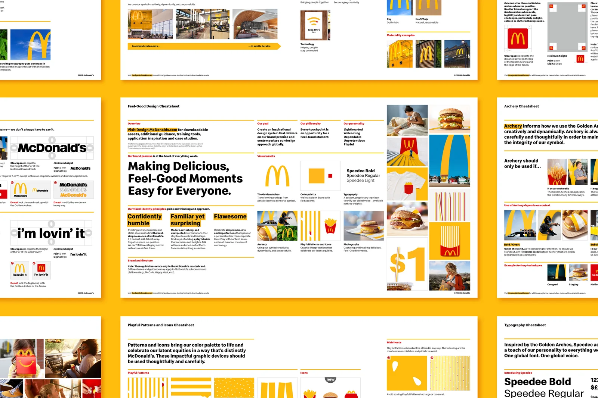

4. Hacer las cosas siempre de la misma manera
Una marca se vuelve reconocible cuando repite los mismos elementos una y otra vez.
Los mismos colores.
Las mismas tipografías.
El mismo estilo de ilustraciones.
El mismo logotipo.
La misma forma de utilizar fotografías.
La misma manera de hablar.
Si después del rebranding, cada publicación del PASE continúa utilizando una tipografía diferente, nuevos colores, otro estilo de ilustración o una forma distinta de colocar el logotipo, será mucho más difícil que los estudiantes aprendan a reconocer la marca.
Por eso, después del rebranding, una de las tareas más importantes será simplemente:
mantenernos fieles a lo que se definió.
Crear un manual de marca es fundamental
El rebranding debería terminar con un manual de marca para el PASE y sus proyectos. Un documento sencillo y fácil de utilizar.
Ese documento debería dejar claro, como mínimo:
- qué colores utiliza el PASE y sus proyectos;
- qué tipografías utilizan;
- cómo debe utilizarse el logotipo;
- qué estilo de ilustraciones utiliza cada uno;
- qué estilo de fotografías utilizan;
- qué elementos gráficos pueden aparecer;
- y cómo hablan el PASE y cada programa.
Una vez definidas estas reglas, no deberían cambiar según el gusto de la persona que esté diseñando ese día.
Si el manual establece dos tipografías, se utilizan esas tipografías.
Si establece una paleta determinada, se utilizan esos colores.
Si define un estilo de ilustración, las nuevas ilustraciones deben seguir ese mismo estilo.
Si establece cómo utilizar el logotipo, no se modifica su forma, colores o posición arbitrariamente.
El manual de marca es lo más parecido a una “constitución nacional” que una marca puede tener.
Si algún día se decide reformarlo, puede hacerse, pero debe haber razones de peso detrás de esa decisión.
Aplicado al PASE
Una publicación del PASE promocionando todos sus porgramas puede tener un mensaje distinto al de una publicación sobre orientación o de una invitación a un evento.
Aunque el mensaje cambie y tal vez se usen diferentes fotografías, el objetivo es lograr que el estudiante piense de inmediato:
“Esto es del PASE.”
Por eso, el manual de marca debería ser efectivo para que nadie se pregunte:
“¿Qué estilo voy a utilizar esta vez?”
Debería preguntarse:
“¿Cómo comunico esta idea utilizando el estilo del PASE?”
Ejemplo real: McDonald's
McDonald's ofrece un buen ejemplo porque su publicidad cambia constantemente y muestra cientos de productos distintos en todo el mundo, pero conserva una serie de elementos que la hacen fácilmente reconocible.
En su renovación visual desarrollada con Turner Duckworth, la marca decidió utilizar de forma mucho más disciplinada elementos como:
- los arcos dorados;
- el amarillo y el rojo;
- una tipografía propia llamada Speedee;
- un estilo definido de fotografía;
- patrones gráficos;
- y un sistema de ilustraciones inspirado en productos conocidos de McDonald's.
Esas ilustraciones representan elementos como papas fritas, hamburguesas o ingredientes con un mismo estilo gráfico.

El hecho de que sean fieles a su manual de marca, no los obliga a que todos sus anuncios sean iguales. La idea aquí, es que pueden existir muchas publicaciones diferentes sin que cada publicación tenga que inventar una nueva identidad.
La importancia práctica del manual de marca
En una marca, distintas personas pueden diseñar presentaciones, afiches, páginas web u otros materiales.
El manual sirve para que todos sigan las mismas reglas. Así, aunque cambie la persona que diseña, la marca sigue viéndose y sintiéndose igual.
Preguntas por responder
Antes de publicar cualquier pieza del PASE, revisar:
¿Utiliza los colores correctos?
¿Utiliza las tipografías correctas?
¿Respeta el logotipo?
¿Las ilustraciones pertenecen al estilo definido?
¿Las fotografías siguen el mismo criterio?
¿La forma de hablar corresponde al PASE?
Si la respuesta es sí, adelante.
Si la respuesta es no o no sé, la primera pregunta debería ser:
“¿Qué dice el manual de marca?”
Referencias
- Turner Duckworth. McDonald's. Caso sobre el desarrollo del sistema visual global de McDonald's, incluyendo arcos dorados, tipografía, ilustraciones y herramientas para mantener su aplicación consistente.
- The One Club for Creativity. (2020). McDonald's — Visual Identity System. Documenta la aplicación del sistema visual en 120 países y más de 35,000 restaurantes, además de su biblioteca de ilustraciones, tipografía y recursos para equipos y agencias.
- Communication Arts. McDonald's Identity. Describe el desarrollo de la tipografía Speedee, el sistema de ilustraciones y las herramientas creadas para mantener una identidad coherente internacionalmente.